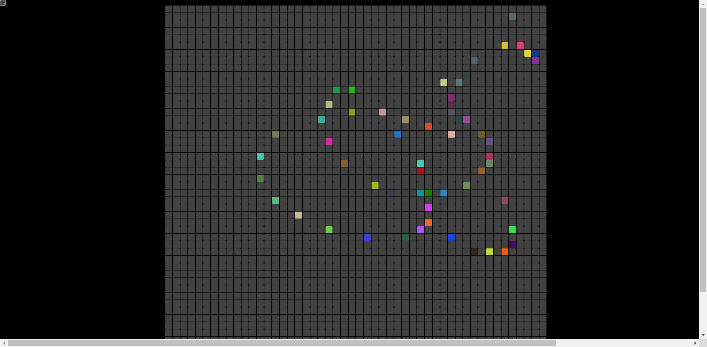

My name is Manuel, and I am Web designer
I have created several responsive, creative and innovative websites.
Contact me 📲

#projects

WDSE's projects
Projects created in Web Development in Server Environment in DAW2

WDCE's projects
Projects created in Web Development in Client Environment in DAW2

Animación colores
Aplicación que cambia el color a los cuadrados pasando el raton por encima.
#skills
| Lenguages |
|---|
| JavaScript |
| Java |
| PHP |
| Data base |
|---|
| MySQL |
| MongoDB |
| SQL |
| Tools |
|---|
| VSCode |
| Netbeans |
| VirtualBox |
| GitHub |
| Server mount |
|---|
| SSH |
| Proxy |
| Apache |
| DHCP |
| DNS |
| Others |
|---|
| HTML |
| CSS |
| XML |
| C++ |
| Batch scheduling |
| Bourne Shell |
#about-me
Hello I am Manuel!
I am from Mérida (Spain) and I am a web designer,
I also like the field of telecommunications and networks since I am a Senior Technician
in Network Information Systems Administration.
I am currently studying a Higher Degree in Web Application Development at the institute
Albarregas in Mérida (Spain).
I am proactive, creative and above all I like teamwork and being able to help others.
Read more 👇